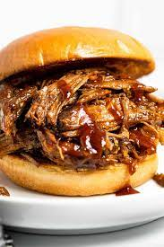

pulled pork
 Pulled pork is a savory and tender delicacy made from slow-cooked pork shoulder or
butt, typically seasoned with a flavorful dry rub and cooked low and slow until the
meat reaches a melt-in-your-mouth tenderness. This beloved dish is known for its smoky,
sweet, and spicy flavor profile, and it's often served as a filling for sandwiches
ingrediants
- Pork Shoulder or Pork Butt: The main cut of meat, typically a 4-6 pound roast, is the heart of pulled pork.
- Dry Rub: A mixture of spices and seasonings, which often includes salt, pepper, paprika, brown sugar, garlic powder, and other preferred spices
- liquid: Common options include apple juice, cider vinegar, or broth.
- Barbecue Sauce
- Buns or Serving Base
- Optional Sides: Consider serving pulled pork with coleslaw, pickles, or other sides to complement the dish.
directions
- Prep the Pork: Trim any excess fat from the pork shoulder. Then, rub the dry rub mixture all over the meat, covering it thoroughly. Wrap the seasoned pork in plastic wrap and refrigerate for at least 1-4 hours, or overnight for best results.
- Prepare the Smoker or Oven: You can cook pulled pork in a smoker or an oven. For a smoker, preheat it to around 225-250°F (107-121°C). For an oven, set it to the same temperature and use a roasting pan.
- Smoke or Roast: Place the seasoned pork in the smoker or oven, and cook it low and slow for several hours. The total cooking time can range from 6 to 12 hours, depending on the size of the roast and the cooking temperature. It's done when the internal temperature reaches about 195-205°F (90-96°C), and the meat is tender and easily pulled apart.
- Rest the Meat: Once the pork is done, remove it from the heat source and let it rest for about 30 minutes. This allows the juices to redistribute, making the meat more flavorful and tender.
- Pull Apart: Use two forks to shred the pork into small pieces. The meat should pull apart easily and be tender and juicy.
- Serve: Pulled pork is versatile and can be served in various ways. The most common presentation is on buns as sandwiches, but it can also be served over rice, on top of salads, or with your favorite sides. If desired, you can add barbecue sauce for extra flavor.
- Enjoy: Finally, savor your homemade pulled pork, either as a mouthwatering sandwich or in your preferred serving style, and relish the delicious smoky, savory flavors that slow-cooking has imparted to the meat.
return to home